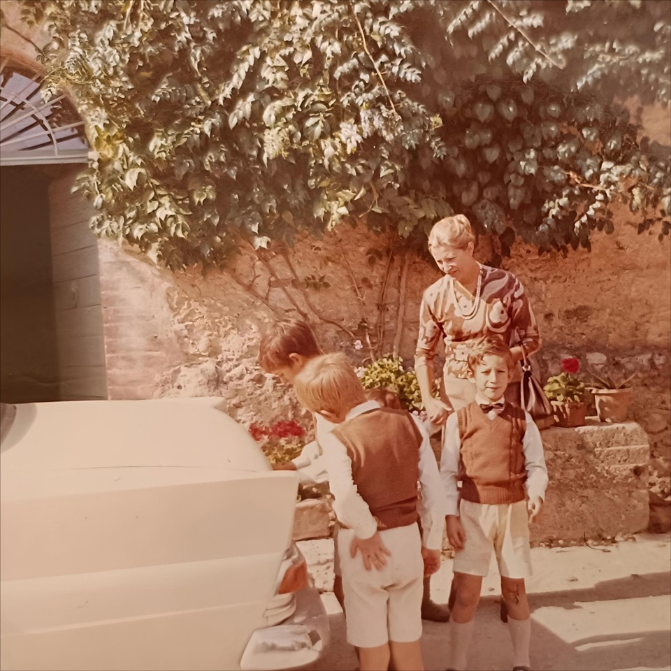
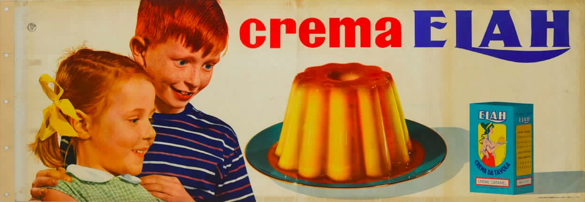

Since ours was a large family, my mother bought food in oversized, multi-pack quantities. That was true in the early 1970s, even when there were still only four of us children—sent one after another to eat in the kitchen until we were deemed properly trained in table manners. There was always at least one grandmother and a great-aunt living with us; then my two sisters arrived, and finally the youngest brother. At the table—set for eight, nine, sometimes ten or more—dishes had to be plentiful.
Marie Claire did most of the grocery shopping once a month at the region’s first cash-and-carry warehouse. Our family farm entitled her to professional status, which allowed her to stock up on milk, coffee, canned tomatoes, pasta, sweets, and cleaning products in large quantities and at wholesale prices. When I went with her, she would say things like, “Let’s go to the short man with the mustache—he’s the nicest.” And if the man with the mustache wasn’t there that day, she would be disappointed. Other employees would still help load the shrink-wrapped packages onto the cart and then into the car trunk, but it was clear they lacked the same patience and kindness.

The grocery run took quite some time. My mother carefully walked up and down every aisle, her shopping list clipped to the cart. She was the only one who could make sense of it: some items were written in French, others referred to brands—often misspelled—and still others were her own cryptic abbreviations. She never crossed items off as she went along; instead, she recited the entire list out loud, again and again, to see what was still missing. She hushed me if I distracted her, but she enjoyed bantering with the employees—intrigued by her foreign accent—or with other regular customers like herself, women trying to feed large families on the modest income of small farms.
When it was time to pay, my mother stepped into a glass booth where the accountant—who, unlike other staff, had no reason to endure the cold required to preserve the goods—printed out long itemized receipts. At the bottom, the total struck me, as a child, as an outrageous sum. If my parents kept spending that much to feed us, I was certain we would soon be ruined.
At home, there was a large pantry to store all that food. Shelves groaned under the weight of canned tomatoes, cartons of milk, sacks of pasta and rice weighing several kilos, jars of pickled vegetables and fruit in syrup. There were also provisions from our own land: cured meats, cheese, olive oil, wine. Even though food was abundant at the table, it never seemed quite enough—especially after my parents, aunts, grandmothers, and any passing guests had been served, and even more so when lunch or dinner included something particularly good. We children were entitled to an afternoon snack, but outside the four daily meals, nothing else. Sweets spoiled both teeth and appetite, my mother reminded us, firmly disapproving of impromptu nibbling.
Yet she herself enjoyed dessert, and she regularly bought dozens of boxes of Elah brand caramel custard. Making it was simplicity itself: the vanilla-flavored powder was added to warm milk and brought just to a boil, careful not to let it spill over. Caramel was poured into a mold, followed by the liquid custard, then everything was left to cool in the refrigerator before being unmolded onto a serving plate. An elementary process, producing an extraordinary result. The custard, smooth and trembling, pale cream in color, steep-sided like a volcano and darkened on top by its hardened lava, filled the dining room with a vanilla scent. For a moment it was a mirage of perfection—an ethereal Mount Kilimanjaro rising from the savannah, a Mount Fuji at the moment the snow began to melt. I wished I could admire it a little longer in its pristine beauty and anticipate the cold, yielding texture of the vanilla cream. But once it reached the table, the first spoonful demolished its flank, sending the glossy brown summit sliding down into the valley below.

More often, however, when someone in the kitchen set out to make the custard, the clear plastic packet containing the caramel had mysteriously vanished. Not from one box, but from all of them. Every single packet had been plundered! The dessert, as pictured on the box, was irreparably compromised. And yet how good that sticky, black caramel was—sweet, with a hint of bitterness and toastiness that seduced the palate with aromas of malt, hazelnut, and butter. Why wait to enjoy it melted over the custard when you could suck it straight from the packet, after snipping off the tip and squeezing out every last drop with your fingernail?
When the caramel-less custard finally appeared on the table—a pale substitute for the real thing—my mother would look at us one by one around the table. Anyone pretending innocence gave themselves away at once.